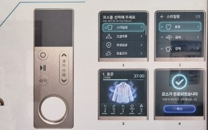
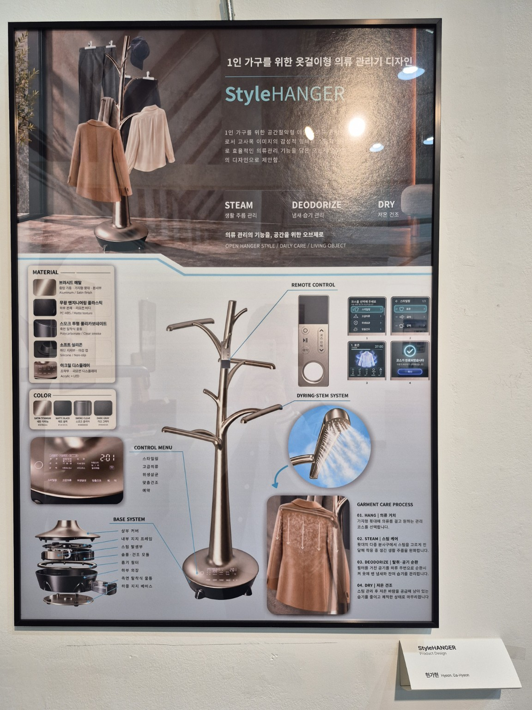

STEAM / 생활 주름 관리
거치된 의류에 스팀을 전달해 생활 속 주름을 완화하는 관리 기능을 제안합니다.
02 / PRODUCT DESIGN
1인 가구를 위한 옷걸이형 의류 관리기 디자인
의류 관리의 기능을, 공간을 위한 오브제로.
나무의 형상에 일상적인 의류 관리 경험을 담았습니다.

LIVING OBJECT / DAILY CARE
StyleHANGER는 공간을 효율적으로 사용하고 싶은 1인 가구를 위한 옷걸이형 의류 관리기 콘셉트입니다. 나무를 연상시키는 줄기와 가지의 형태로 옷을 거치하고, 생활 공간 속 오브제로 어우러지도록 제안했습니다.
오픈 행거 구조에 스팀, 냄새·습기 관리, 저온 건조 기능을 결합합니다. 의류를 보관하는 행동과 관리하는 과정이 일상 속에서 자연스럽게 이어지는 것을 목표로 합니다.
CARE FUNCTIONS
거치된 의류에 스팀을 전달해 생활 속 주름을 완화하는 관리 기능을 제안합니다.
필터를 거친 공기를 순환시켜 의류에 남은 냄새와 습기를 관리하도록 계획했습니다.
스팀 관리 후 저온의 바람으로 남은 습기를 줄이고, 의류 관리를 마무리하는 기능입니다.
기능 설명은 작품 패널의 디자인 제안을 바탕으로 하며, 전시 모형의 성능 검증 결과를 의미하지 않습니다.
FORM & SYSTEM
중앙 줄기에서 뻗어 나오는 가지형 거치부는 옷과 모자 등 다양한 의류·소품을 걸 수 있도록 구성했습니다. 넓은 하부 베이스는 전체 실루엣의 중심을 잡고 주요 관리 부품을 담는 구조로 제안했습니다.
패널의 베이스 분해도에는 내부 지지 프레임, 스팀 발생부, 송풍·건조 모듈, 흡기 필터와 탈착식 물통 등이 정리되어 있습니다. 메탈 계열의 몸체와 어두운 하부 소재를 조합해 생활 공간에 어울리는 마감을 계획했습니다.
REMOTE CONTROL
별도 리모컨으로 코스를 선택하고 관리 상태를 확인하는 인터페이스입니다. 코스 선택, 세부 설정, 진행 상태, 완료 안내로 이어지는 화면 구성을 패널에 담았습니다.
스타일링, 고급의류, 위생살균, 맞춤건조, 예약 등 의류 관리 상황에 맞춘 메뉴를 제안했습니다.

PROJECT BOARD
소재·색상, 리모컨 인터페이스, 스팀 전달 구조, 베이스 구성과 의류 관리 과정을 정리한 작품 패널입니다.
사진 속 작은 글씨는 촬영 해상도와 빛 반사로 일부 읽기 어려울 수 있습니다.
패널 원본 크게 보기 ↗